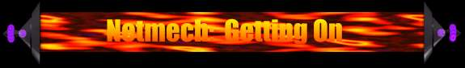

 MERCNET
MERCNET
Mercnet is DOS based so far so you'll
have to go to DOS to play.
MERCPPP is the program you'll
have to run, it automatically goes into
setup when you run it the first
time.
The Settings:
You have to get your COM port & interrupt
etc right (or it'll never work)
Set Baud Rate to the highest value your modem
will allow.
Flow Control is virtually always Hardware.
Open Type is virtually always Active.
Listen - Don't Answer.
Connection - Modem Autodial
Frame Type - PPP
Things to consider:
Your best bet is to use a custom mech because
virtually everyone else is. To make custom mechs for MERCNET you
have to go to instant action in Mercenaries and make your own those custom
mechs you make there are usable in MERCNET. Get used to spending
some resources on AMS because it will save your mech.
More to come when I get more time.